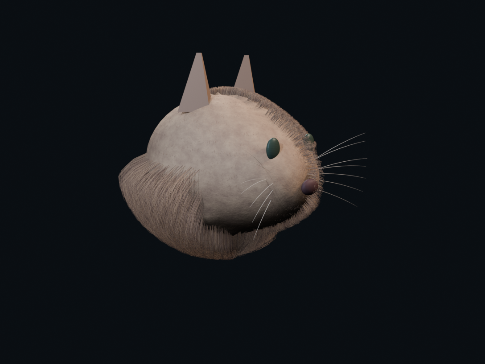
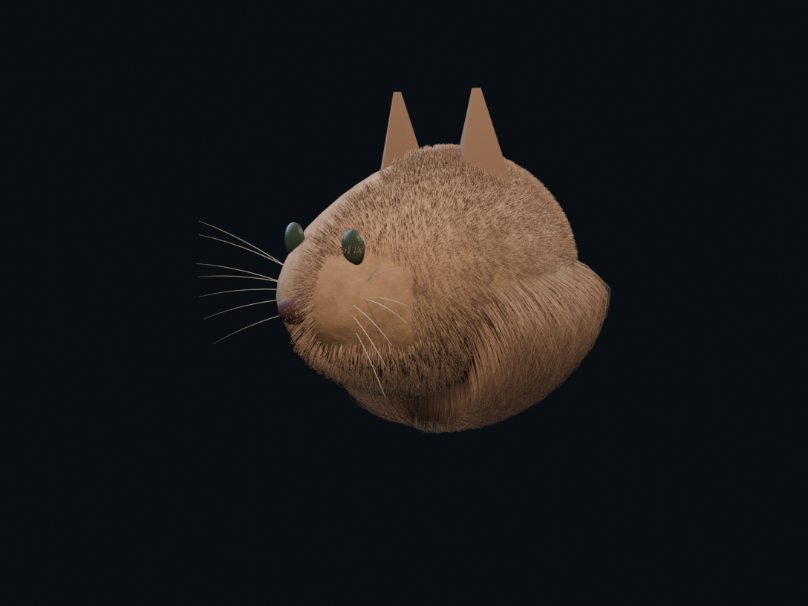

Ruff threshold pair
The same dense procedural cat, cameras, lighting, fibers, palette, and estimator contract. Only lower-ruff length changes: 0.34 → 0.85. The second arm makes the region constitutive enough that collapsing it into the neighboring puffy field is an obvious residual.
Inspection predicate
Does the right arm make materially longer lower hair legible at first glance without changing the upper coat or whisker system?
This is a controlled assay fixture, not a production groom beauty target.
Front


Left three-quarter


Right three-quarter


Observed paired result
Neither arm produced an explicit ruff proposal. The 2.5× arm therefore records a Gemma 3 4B miss on a visually constitutive length region.
The SAM overlays below are the unadmitted raw result of the current candidate policy: union every returned detection above 0.1. Broad background or whole-head spill is failure evidence, not a usable semantic region.
This result is specific to mlx-community/gemma-3-4b-it-qat-4bit. It does not reject VLM-guided regional decomposition or justify changing the groom fixture before testing a more capable observer.
Subtle ruff estimator return
VLM: mlx-community/gemma-3-4b-it-qat-4bit · SAM: mlx-community/sam3-bf16 · threshold 0.1 · explicit ruff proposal: no
| System | Literal SAM phrase | Length | Density | Puff | Confidence |
|---|---|---|---|---|---|
main_fur | brown_fur_head | 0.7 | 0.8 | 0.6 | 0.9 |
left_muffler | left_muffler_pad | 0.2 | 0.3 | 0.1 | 0.6 |
right_muffler | right_muffler_pad | 0.2 | 0.3 | 0.1 | 0.6 |
Constitutive ruff estimator return
VLM: mlx-community/gemma-3-4b-it-qat-4bit · SAM: mlx-community/sam3-bf16 · threshold 0.1 · explicit ruff proposal: no
| System | Literal SAM phrase | Length | Density | Puff | Confidence |
|---|---|---|---|---|---|
main_fur | Dense, rounded fur | 0.8 | 0.9 | 0.7 | 0.9 |
cheek_fur | Sparse, short fur on cheeks | 0.2 | 0.3 | 0.1 | 0.6 |
whisker_left | Left muzzle pad - whisker emergence | 0.5 | 0.2 | 0.3 | 0.7 |
whisker_right | Right muzzle pad - whisker emergence | 0.6 | 0.2 | 0.4 | 0.8 |
Audit
Baseline: procedural-groom-source-like-v0-density-12x
Successor: procedural-groom-source-like-v0-density-12x-ruff-length-2p5x
Fiber count: 43574 · density: 12× · ruff multiplier: 2.5×
Preflight: threshold_pair_bound_for_visual_inspection · visual admission false · scientific admission false.
Claim ceiling: Observation-domain friendliness under one procedural truth fixture only; no estimator correctness, target-distribution equivalence, anatomical truth, production grooming, or visual admission.